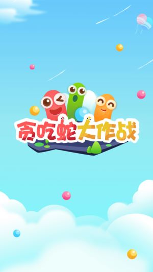

游戏背景：
《贪吃蛇大作战》的世界中，每个人在初始都化身为一条小蛇，通过不断努力变得越来越长，最终制霸一方。不仅比拼手速，更考验策略。
无尽模式：
无尽模式中没有时间限制，可以努力成长制霸一方，不断刷新记录。
团战模式：
团战模式中分为红黄蓝三组，同组玩家之间相互碰撞不会被击杀，而被敌方击杀后可以再次复活继续作战，哪只队伍总分最先到达4000分或加时赛结束时分数领先的队伍获胜。
挑战模式：
挑战模式通过击杀敌人获得更多分数，游戏中有电圈、头盔等技能。游戏还会出现危机时间，一大波敌人出现，游戏难度不断加大，不过，度过危机时间之后会有bonus time。
赏金模式：
赏金模式中蛇身长度固定不变，入场时可以选择长度和携带的欢乐币，每局比赛10人，你有三分钟的夺宝时间，你的目标就是搜集更多的欢乐币，被击杀则会掉落头顶上拥有的所有欢乐币。游戏结束，欢乐币最多的玩家获胜。
游戏特点：
游戏商店中具有皮肤、击杀效果，礼物，改名卡等道具。